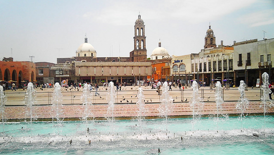
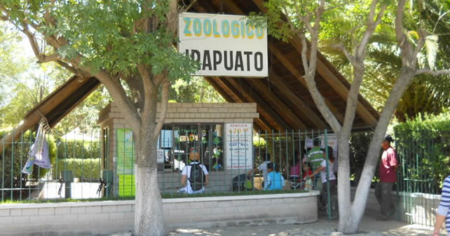
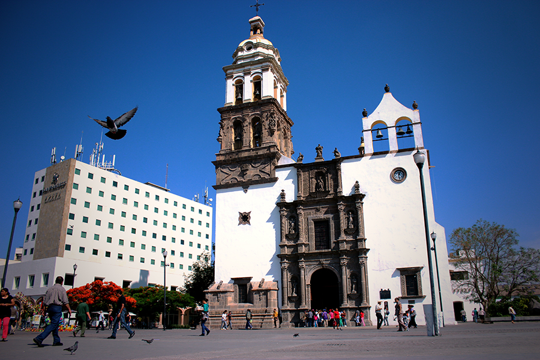

Esta fuente es una de las atracciones más conocidas de Irapuato. Cada cierto tiempo el agua de esta fuente danza acompañada con luz y sonido, en un espectáculo que sorprende a los visitantes. Por las noches se puede apreciar mejor ya que el agua se torna de diversos colores. Se encuentra en el centro de la cuidad a un lado de la Catedral.
Parque Zoológico de Irapuato

El Zoológico de Irapuato es un lugar ideal para visitar en familia. Tiene una colección de diferentes especies de animales y además que esta permitido tener contacto con la mayoría de los animales. No olvides recorrer el zoológico en el tren.
Catedral de Irapuato
